| 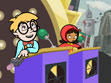"Tobey
or Consequences"
While Tobey has a babysitter, WG and Tobey get
into a battle of words on a real-live match of
the game show "Crash or Pie."
Vocab words: Enormous, Bicker
"High-Fat Robbery"
The Butcher is hosting free barbecues as diversions
to help him carry out his crimes; WordGirl takes
him down, after discovering his meaty powers are
neutralized by tofu!
Vocab words: Impressive, Diversion
|
| 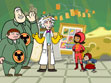
"You Can't Crush City Hall"
Chuck the Evil Sandwich-Making Guy is threatening
to smush City Hall with his giant sandwich press…
unless WordGirl can guess his secret code-word
in time!
Vocab words: Doomed, Dash
"Two Brain Highway"
WordGirl must track down Dr 2-Brains after he
escapes from the Prison Warden's life-size maze,
the same week there just happens to be lots of
rare cheese to steal from events around town.
Vocab words: Coincidence, Guarantee
|
| 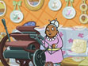
"Coupon Madness"
Granny May goes on a crime spree by using her
coupons printing-press to get things for free…
WordGirl has to track her down and foil her plan.
Vocab words: Squint, Coupon
"When Life Gives You Potatoes. .
."
Dr 2-Brains has escaped from prison again! WordGirl
must find him before he perfects his latest weapon…
a ray that can turn gold into cheese. (Luckily,
so far, he's only succeeded in turning gold into
potato salad.)
Vocab words: Transformation, Glum
|
| 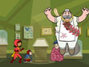
"Jerky Jerk"
When Becky/WG's class takes a trip to the local
museum, she must stop the Butcher from stealing
their famous artifact: the ancient Beef Jerky
of Supreme Power.
Vocab words: Clumsy, Supreme
"Becky's Birthday"
WG/Becky battles an expanding Energy Monster while
her parents plan a surprise birthday party for
Becky.
Vocab words: Appetite, Expand
|
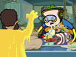"Chuck!"
Chuck the Evil Sandwich-Making Guy tries to steal
gold instead of sandwiches, which is confusing
to everyone else. WG must decide which is a bigger
threat to the city - Chuck's crimes, or Mr. Botsford's
strange-smelling traditional family recipe.
Vocab words: Traditional, Confusing
"Down With Word Up"
The clever villain Granny May tricks the townspeople
to turn against WordGirl - providing a cover for
her latest crime spree. WordGirl must save the
town and turn public opinion back to her side.
Vocab words: Deceive, Idolize
|
| 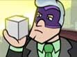"Book
Ends"
When WordGirl accuses Tobey of being too predictable
with his crimes, he responds by using his robots
to hold WG's beloved town library hostage, unless
she plays them in a game of winner-take-all dodge
ball.
Vocab words: Destroy, Predictable
"Mr. Big"
Mr. Big, a slick business man up to no good, introduces
his new product: "The Thing" that does
"stuff". WordGirl must figure out his
secret motive and save the city.
Vocab words: Vague, Specific
|
| 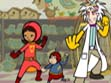"Super-Grounded"
Becky is grounded for not cleaning her room; when
she sends Captain Huggy Face in WordGirl 's place
to battle the Butcher, he feels like chopped liver.
Vocab words: Disappointed, Preposterous
"Mouse Army "
Dr. 2-Brains has created an army of super-smart
mice - but they've become too smart! WordGirl
must step in and save the city before the mice
take over.
Vocab words: Depend, Stampede
|
| 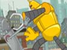"Tobey's
Masterpiece"
After Tobey fails to paint a masterpiece in art
class, Tobey's robot turns out to be a great artist
in its own right.
Vocab words: Masterpiece, Gasp
"Chuck the Nice Pencil-Selling Guy"
Chuck, freed from jail, tries to go straight -
but when he finds out his new boss doesn’t
like sandwiches, he snaps and takes him captive.
WordGirl must broker a compromise to save the
day.
Vocab words: Stubborn, Compromise
|
| 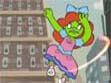"The
Birthday Girl"
WordGirl meets The Birthday Girl - a spoiled brat
who enlarges when she doesn’t get her way.
WG's only hope is to use Violet's help to teach
her to be generous.
Vocab words: Generous, Exaggerate
"Granny Sitter"
Granny May answers an ad to be the Botsford's
new babysitter - so she can have an alibi for
her latest crime. But she didn't plan on babysitting
WordGirl!
Vocab words: Investigate, Accelerate
|
|
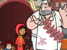"Mr.
Big's Big Plan"
WordGirl must get to the bottom of Mr. Big's plan
to steal the local election when he claims he's
reformed and runs for Mayor.
Vocab words: Decide, Opponent
"Vocab Bee"
Becky enters a vocabulary bee, but the Butcher's
latest crime spree proves to be a major distraction
for WordGirl.
Vocab words: Perfect, Suspicious
|
| "Shrinkin'
in the Ray"
WordGirl must defeat Dr 2-Brains when he invents
a shrink ray, and uses it to shrink down the cheesy
items he covets for easy stealing.
Vocab words: Increase, Decrease
"Department Store Tobey"
Tobey interrupts the Botsford's shoe shopping
trip, as he tries to impress WordGirl with his
elaborate riddles - but he's too clever for his
own good.
Vocab words: Malfunction, Clever
|
| 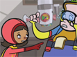"Chuck
E Sneeze"
WordGirl has to battle Chuck's latest evil scheme,
while also fighting off a nasty cold.
Vocab words: Avoid, Contagious
"Swap Meat"
The Butcher is making a bundle, auctioning off
forgeries of famous lost works of art.. WordGirl
has to figure out how he's pulling it off.
Vocab words: Forgery, Magnificent
|
| 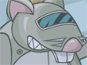"Granny's
All-Cure Good Time Spritzer"
WordGirl must put a stop to GrannyMay's latest
con game - selling phony bottles of 'all-cure'
spritzer that restores youth.
Vocab words: Hoax, Potent
"Mecha-Mouse"
Dr 2-Brains builds a mechanical mouse muscle suit,
to make him as strong as he is smart… WordGirl
must stop him from robbing the annual 2-for-1
festival.
Vocab words: Identical, Astonished
|
| 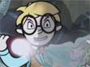"Princess
Triana & the Ogre of Castlebum"
WordGirl does battle with Tobey, who is determined
to steal a copy of the newest sequel to everyone's
favorite book series so he can read it before
everyone else.
Vocab words: Reveal, Devotion
"Heat Wave, Crime Wave"
On the hottest day of the summer, GrannyMay uses
her air-conditioned jetpack/suit of armor to go
on a crime spree - and WG and CHF just might be
too darn hot to stop her.
Vocab words: Swelter, Opportunity
|
| 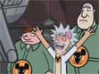"Thorn
in the Sidekick"
Chuck reluctantly teams up with an obnoxious,
exasperating new sidekick named The Whammer. WG
and CHF must track them down - before everything
in town gets whammed.
Vocab words: Sidekick, Exasperated
"Crime Takes a Holiday"
Dr 2-Brains is on vacation, and WG has to battle
his replacement - a super-fan named Glen who isn't
quite as scary as the real Doc.
Vocab words: Replacement, Gloat
|
| 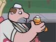"Meat with a Side of Cute"
Tired of being defeated by WordGirl, the Butcher
enlists the unlikely ally of an adorable kitten
- hoping to conquer WG with cuteness.
Vocab words: Frantic, Adorable
"Mr. Big Words"
WordGirl is busier than ever when Mr Big invents
a ray that causes everyone in town to use big,
complicated words.
Vocab words: Clarify, Proceed
|
| 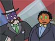"Two
Brains Forgets"
It looks like all is lost when Dr 2-Brains discovers
WordGirl's secret identity! But some quick thinking,
some help from the Botsford family, and a little
luck save the day when 2-Brains' amnesia ray ends
up working on the Doc himself.
Vocab words: Quarrel, Identity
"Banned on the Run"
Mr. Big finally cheats his way to becoming the
town Mayor - and his first order of business is
to ban Word Girl! WG and Huggy must restore order
to the town and undo all of the silly laws Mr
Big keeps passing.
Vocab words: Ban, Restore
|
| 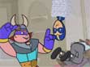"Have
You Seen the Remote?"
Tobey and WordGirl team up to track down missing
remote control for his robots. When Tobey finally
has a chance to spend time with his crush-WordGirl
(sigh)- she has to ignore his distractions and
stop whoever is in charge of the robots attack
on the city.
Vocab words: President, Baffling
"Sidekicked to the Curb"
The Whammer has had enough of all of this sidekick
business. He wants to be his own boss, so he signs
up for the Coach's motivational help program.
Are all of these evil deeds really steps in the
program, or has he just become a pawn in the Coach's
master plan?
Vocab words: Motivate, Finale
|
|
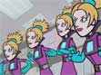"Lady
Redundant Woman"
All Beatrice Bixby wants is to be named manager
of the local copy shop where she works. But one
day when she merges with a photocopier she becomes
Lady Redundant Woman.
Vocab words: Perplexed, Redundant
"A Game of Cat and Mouse"
Just when it seems like nothing can stop Dr 2
Brains from transforming hair gel into cream cheese,
WordGirl teams up with the newest resident of
2 Brain's old science lab - Professor Tubing.
Vocab words: Texture, Weakness
|
| 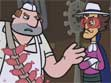"The
Masked Meat Marauder"
While the Botsfords and the Mings go head to head
in a charity car wash, the Butcher battles his
new rival--the Masked Meat Marauder. Can this
town handle two meat-flinging villains or will
WordGirl have to send one of them packing? Vocab
words: Rival, Morale
"Sandwich Land"
Chuck is fed up with living at home in his mom's
basement. So he builds an evil lair, Sandwich
World! Will WordGirl and Captain Huggy Face escape
Chuck's crazy sandwich theme park? And will Chuck
be strong enough to avoid getting homesick?
Vocab words: Compliment, Lair
|
|
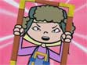"Violet
Superhero"
There's a new superhero in town when Violet becomes
"The Framer." It seems like her "superpowers"
aren't much help while WordGirl is doing all the
crime-fighting. But when the Butcher attacks "The
Framer" comes to the rescue.
Vocab words: Catchphrase, Confide
"Big Business"
Mr. Big rigs Businesspaloozafest, putting on a
spectacle at his booth, in order to win ownership
of the biggest building in town. It's up to Huggy
to disarm the mind control ray so that WordGirl
can stop Mr. Big from cheating-and speaking gibberish.
Vocab words: Gibberish, Brilliant
|
| 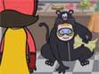"The
Panther Begins... and Ends"
Chuck is tired of the same old sandwich-related
crimes so he develops a new persona: The Handsome
Panther! He's ferocious and he even has a theme
song. Will WordGirl be thrown off by Chuck's new
identity?
Vocab words: Ferocious, Design
"The Butcher, the Baker, and the
Candlestick Maker"
Rub a dub dub! The Butcher and his old pals, The
Baker and The Candlestick Maker, try to relive
the good old days of pulling silly pranks. But
can the Butcher resist his truly evil ways when
WordGirl shows up on the scene?
Vocab words: Finicky, Trio
|
| 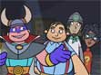"Mouse-Zilla"
Team Botsford goes head-to-head against Team Heaslip
in the citywide scavenger hunt. Dr. Two-Brains
and Tobey have also teamed up to create a mighty,
metal Mouse-Zilla robot to attack the city and
steal all its cheese. Will WordGirl be able to
defeat Mouse-zilla and help the Botsford’s
win the scavenger hunt?
Vocab words: Collaborate, Quest
"Villain School"
In an attempt to inspire some novice villains,
The Coach invites his prize student, The Whammer,
to speak at his new school for Evil Villains and
Arch Enemies. WordGirl faces off against this
new pack of troublemakers to thwart their first
assignment: stealing the legendary “Michelangelo’s
Whistle.”
Vocab words: Novice, Legendary
|
| 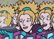"Return
of the Reprise of Lady Redundant Woman"
Lady Redundant Woman has escaped from jail and
she has her eyes set on being crowned the belle
of the Triple Dip ball. WordGirl must find a way
to stop her and her copies before they steal all
of the elegant dresses, fancy necklaces and stylish
shoes in the city.
Vocab words: Elegant, Incognito
"A Simple Plan"
After a slew of failed (and complicated) robberies
Dr. Two-Brains decides to go back to basics and
just steal cheese from the grocery store. But
when the Mayor decides to host “The Most
Amazing Cheese Stunt In History” he can’t
resist and WordGirl is hot on his trail.
Vocab words: Hideous, Complicated
|
| 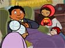"Granny
Mayor"
Granny May uses her wily ways to become the Mayor’s
Senior Aide. WordGirl has to help the Mayor see
past her “nice old lady” act to stop
him from signing laws which actually help villains
commit more crimes.
Vocab words: Masquerade, Appreciate
"Tobey Goes Good"
In order to win WordGirl’s heart Tobey decides
to enter “The Young Inventors Challenge
and Friendly Competition.” He nearly has
WordGirl convinced that he’s given up his
evil ways, until he loses the competition and
loses his cool.
Vocab words: Demonstrate, mumble
|
|  "Dr.
Three Brains" "Dr.
Three Brains"
Glen Furlblam is back on the scene and this time
he's posing as Dr. 3Brains. He steals Dr. 2Brain's
blackout ray and he's on a mission to outdo his
evil idol. WordGirl works with Dr. 2Brains to
anticipate his next cheesy crime.
Vocab words: Outdo, Unexpected
"Bongo Rock"
Chuck disables the security cameras and ties up
the guards at City Hall in what he thinks is the
ultimate show of villainous power. But little
does he know that Mr. Big is behind his latest
crimes. WordGirl and Captain Huggy Face must prove
that they are mightier than these two villains
combined.
Vocab words: Ponder, Mighty
|
|
SEASON 2
|
| 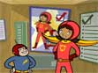
"A Vote for Becky"
It's Election Day and Mrs. Botsford is running
for D.A. while Becky is running for student council
president. Tobey decides to run against Becky
and uses his robots to distract WordGirl from
influencing the student body to vote for Becky.
How can Becky win the election if WordGirl has
to save the city from total robot destruction?
Vocab words: Elect, Candidate
"Class Act"
The Butcher decides that his “wordiability”
is getting in the way of his robbing sprees. So
he enrolls in an adult education class to learn
to articulate. Will the Butcher’s new speech
skills finally give him the advantage he needs
to defeat WordGirl and Captain Huggy Face?
Vocab words: Ramble, Articulate
|
|  "Field Day Fun With Robo-Tobey"
"Field Day Fun With Robo-Tobey"
Becky's really excited about the big field day
competition at school. But when Tobey wins the
potato sack race and the flexed arm hang she suspects
something is awry. Becky has to figure out Tobey's
tricks or else lose her chance at winning the
coveted super deluxe teachers-only magic markers.
Vocab words: Authentic, Competition
"The Two Brains Boogie"
Dr. Two Brains is at it again—this time
he's threatening to turn all the town’s
buildings into cheese. When he traps WordGirl
outside the city limits she has to figure out
how to stop his cheesy plan and get to the Boogie
Oogie Oogie dance contest on time!
Vocab words: Shimmy, Indestructible
|
| 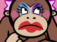
"Slumber Party Pooper"
Becky finally convinces her parents to let her
have her first slumber party. But who invited
Eileen, a.k.a. The Birthday Girl? Becky has to
find a way to placate the bratty guest and still
have fun at her own party.
Vocab words: Blurt, Nuisance
"Line Lessons With Lady Redundant
Woman"
It's the last straw when someone cuts Beatrice
Bixby in line. She transforms into Lady Redundant
Woman and dispatches her copies to dole out some
payback in the form of rude behavior. It's up
to WordGirl put a stop to their impolite ways.
Vocab words: Impolite, Oodles
|
| 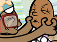
"Mr. Big's Dolls and Dollars"
Everyone in town is obsessed with the new Walk&
Talk WordGirl doll. There's just one BIG problem:
she misuses and misspells words!
Vocab words: Constantly, Indignant
"Great Granny May"
After a salon robbery the conniving Granny May
is sentenced to house arrest... with her Mom,
Great Granny May. Will house arrest and Granny
May's doting mother get in the way of her crazy
crime sprees?
Vocab words: Doting, Evidence
|
| 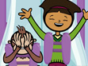
"Theme Park Wham-Page"
Becky and Bob are anxiously waiting in line for
their chance to ride The Coaster-- the ultimate
new roller coaster ride. The Whammer's enthusiasm
for chocolate hot dogs and hi-striker machines
at the park could ruin a totally fun day. Will
WordGirl forfeit her chance to ride the coaster
in order to stop the Whammer destroying the park?
Vocab words: Patience, Enthusiastic
"Chuck Makes a Buck"
WordGirl helps Chuck the Evil Sandwich Making
Guy get a job as the spokesman for Edible Edibles
Sandwiches hoping he will give up a life of crime
to stay on the straight and narrow. But Chuck
becomes determined to show people what a real
sandwich is.
Vocab words: Stupendous, Edible
|
| 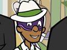
"Tiny Big"
Mr. Big manufactures the ultimate teen idol, Tiny
Big, to steal WordGirl's thunder and brainwash
the town into spending all their money on pop
star merchandise.
Vocab words: Fad, Limelight
"Highway to Harvati"
The Botsford Family vacation gets diverted when
Becky discovers that Dr. Two-Brains is going to
be performing his latest heist at the International
Cheese Exposition.
Vocab words: Leisure, Berserk
|
| 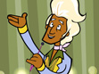
"I Think I'm A Clone Now"
Lady Redundant Woman has an evil plan to destroy
WordGirl’s reputation. When she creates
an evil WordGirl copy the real WordGirl has to
prove that she hasn't turned to a life of crime.
Vocab words: Thesaurus, Malicious
"Answer All My Questions and Win
Stuff "
Seymour Orlando Smooth is the host of the hottest
new game show and Mrs. Botsford is a contestant!
WordGirl has to find a way to stop the fun and
games before Seymour steals all the contestant's
money.
Vocab words: Contestant, Permission
|
|
"Bonkers for Bingo"
Granny May is the city's newest bingo champion.
WordGirl challenge Granny May in a bingo tournament
to make sure that she's given up her evil ways.
Vocab words: Undefeated, Adore
"The Ballad of Steve McClean"
There's a new villain in town: the snazzy, cool
and sanitized Steve McClean. Dr. Two-Brains teams-up
with WordGirl to defeat Steve McClean, restore
order and reclaim his status as the number one
villain.
Vocab words: Snazzy, Heist
|
| 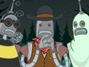
"Tobey's Tricks and Treats"
After losing the costume contest at school, Tobey
sets his Robots on a candy-stealing spree and
vows to ruin Halloween. Becky and Violet (in her
WordGirl costume) plot to save the holiday…
and the city.
Vocab words: Contestant, Permission
"Escape Wham"
When both Chuck and the Whammer attempt to steal
famous, priceless Henry VIII artifacts, WordGirl
assumes they're partners in crime. But instead
of working together the two villains end up battling
each other. Wham!
Vocab words: Potential, Boisterous
|
|  "Where's Huggy?"
"Where's Huggy?"
Disaster strikes when Bob goes missing. WordGirl
tracks him down by making house calls at the evil
villains lairs.
Vocab words: Rehearse, Shrug
"Pretty Princess Premiere"
Will Becky be able to attend "The Pretty
Princess and Magic Pony" movie premiere or
will the Energy Monster foil her chance of seeing
Pretty Princess on the silver screen?
Vocab words: Anticipate, Premiere
|
| 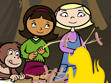
"Robo-camping"
It’s off to the woods for a serene camping
trip with Becky, Violet, Tobey… and his
robots. While the other campers attempt to rough
it, Tobey commands his robots to do all of his
tasks and create a luxurious weekend free from
work. But will Tobey and his robots survive an
unexpected thunderstorm?
Vocab words: Independent, Serene
"The Stew, The Proud"
Time is running out for Becky to return her library
books and maintain her perfect record when Raul
Demiglasse and the Butcher go head-to-head in
a culinary showdown.
Vocab words: Overdue, Superior
|
|
"Who Wants Candy?"
On a field trip to the local candy factory, The
Birthday Girl goes on a candy eating spree. WordGirl
must find a way to save the city's candy and win
back her best friend and field trip buddy, Violet.
Vocab words: Awestruck, Mastermind
"Chuck's Brother"
Chuck’s successful brother, Brent is in
town and being honored for his latest invention…
crustless bread! As the city prepares for the
celebration, Chuck’s envy gets the better
of him. Can WordGirl stop Chuck from destroying
the precious Golden Sandwich Award?
Vocab words: Sibling, Envious
|
|
"Monkey vs. Robot"
The city is hosting the Big Checker Championship
and Bob has to face off against Tobey’s
Robot, the Checkmate 3000! When Tobey puts the
pressure on to win, his robot snaps and WordGirl
and Captain Huggy Face must team up to stop Checkmate
from destroying the city.
Vocab words: Champion, Vanquish
"Becky and the Bard"
Violet and Becky compete for the coveted role
of Juliet to play opposite the dreamy Hunter Throbheart
in Romeo & Juliet. Violet is cast as Juliet
while Becky is the understudy. When the Energy
Monster captures Violet, Becky must chose between
the role of a lifetime and saving her friend.
Vocab words: Shimmer, Memorize
|
|
"The Wrong Side of the Law: Part 1"
The Birthday Girl steals a priceless collection
of Pretty Princess figurines from the jewelry
store (“Mine! Mine! MINE!”). In an
unexpected turn of events Eileen (a.k.a. the Birthday
Girl) charms the Police Commissioner and convinces
him that WordGirl is the culprit.
Vocab words: Examine, Priceless
"The Wrong Side of the Law: Part
2"
WordGirl is stuck in jail, accused of stealing
the priceless collection of Pretty Princess figurines
while the villains of the city are running amok.
What will happen when WordGirl gets cross-examined
by her mom in court? Will WordGirl be able prove
her innocence, save the city from chaos, and put
the real criminal behind bars?
Vocab words: Objection, Trial
|
|
"Two Brains Quartet"
For the city’s centennial celebration the
Mayor promises to unveil its 100 year old cheese
wheel to the winner of the Barbershop Quartet
Competition. Both the Botsford family and Dr.
Two Brains are assembling talented groups. Will
Dr. Two Brains be able to sing his way to victory
and run away with the city’s oldest and
most valuable cheese?
Vocab words: Melodious, Quartet
"Big's Big Bounce"
Becky and Bob join the City Scout Troop only to
discover Mr. Big is the Guest Troop Leader. He
vows to motivate Troop 865 to sell the most Scholastic
Crunch Granola Bars in order to win the world
famous Mega-Jump Trampoline.
Vocab words: Boost, Tempting
|
|
"Giant Mini-Golf"
There’s a new villain in town, Guy Rich,
he’s a super rich evil businessman. Everyone
is impressed by Guy… everyone except Mr.
Big. Mr. Big schemes to win back the spotlight
by building a Colossal Mini Golf Course. But what
will happen when he puts his fellow evil villains
under mind control?
Vocab words: Colossal, Scoff
"Meat Crossed Lovers"
Romantic sparks fly when the Butcher meets Lady
Redundant Woman’s copy Dupey. Will Lady
Redundant Woman allow a union between one of her
copies and the meat-wielding villain?
Vocab words: Duplicate, Interruption
|